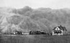

dust

Definition: Dust is made of fine particles of solid matter. On Earth, it generally consists of particles in the atmosphere that come from various sources such as soil lifted by wind (an aeolian process), volcanic eruptions, and pollution. Dust in homes is composed of about 20–50% dead skin cells. The rest, and in offices, and other human environments is composed of small amounts of plant pollen, human hairs, animal fur, textile fibers, paper fibers, minerals from outdoor soil, burnt meteorite particles, and many other materials which may be found in the local environment.
Source: Wikipedia
Wikipedia Page (Something wrong with this association? Let us know.)
Wikidata Page (Something wrong with this association? Let us know.)
Occurs in: